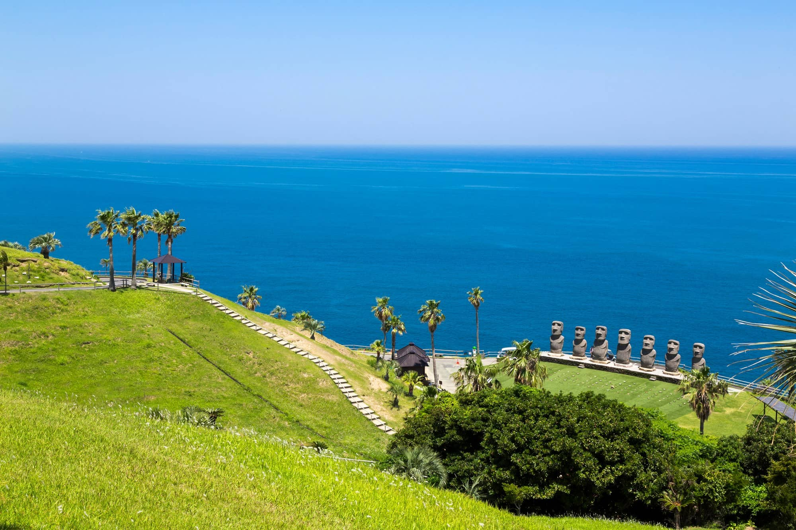
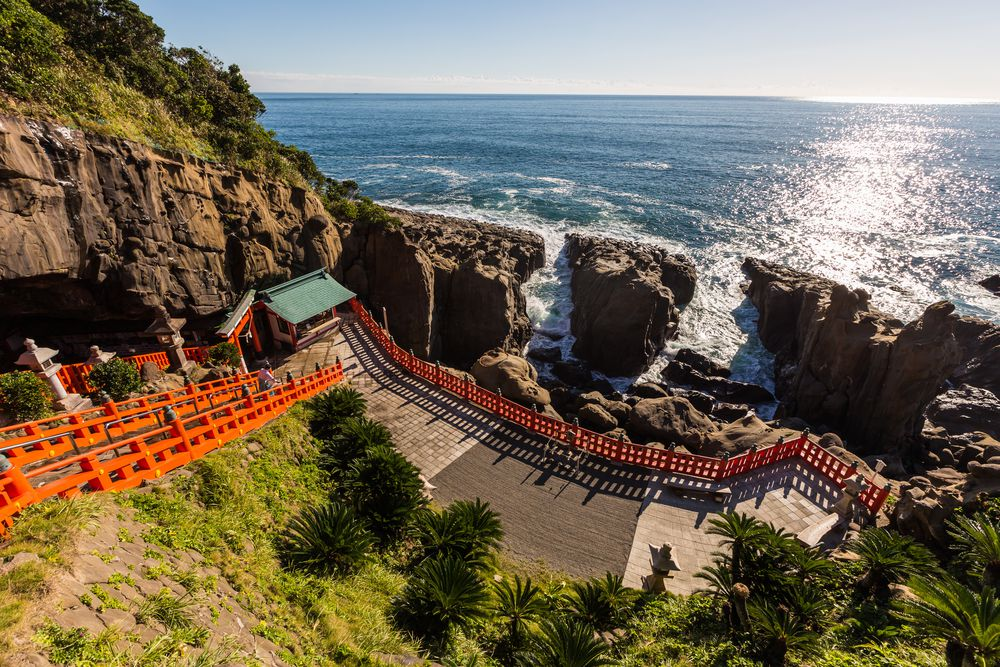

サンメッセ日南
サンメッセ日南には、あのイースター島でお馴染みの「モアイ像」が7体存在します。
日本のモアイ修復チームが1992年から3年かけて、倒れていた13体のモアイ（アフ・トンガリキ）を立ち上げた奉仕と友情に対し、
ラパヌイ（イースター島）の長老会と島民が、日本で復元することを初めて許可し、
サンメッセ日南に世界で唯一７体のモアイ像（アフ・アキビ）を立てることができたそうです。
園内には、世界の珍しい昆虫展や蝶の地上絵・売店・レストラン・ファーストフードなどがあり、非常に楽しめるものになっています。
入園料が必要で、
大人：1000円
中人（中・高生）：700円
小人（4歳以上）：500円
となっているようです。
詳しくは引用元に書いてあるので、確認してみてください！
ぜひ、行ってみてくださいね！
引用: 日南市観光協会-サンメッセ日南
鵜戸神宮
鵜戸神宮は、太平洋に突き出した鵜戸崎岬の突端にある洞窟の中に、朱塗りの色鮮やかな御本殿がご鎮座する珍しい場所です。
「運玉」というものがあり、
男性は左手、女性は右手で願いを込めながら投げ、亀石と呼ばれる岩に入れば願いが叶うといわれています。
1度の購入で5個もらえて、私はここ5年ぐらい初詣で鵜戸神宮に行っていますが、入ったのは1回だけです...。
御本殿に到着するまでの道のりの景色も大変綺麗ですので、
ぜひ、行ってみてくださいね！
引用: 日南市観光協会-鵜戸神宮